Unofficial study solution; not an official GTU answer key. Answers have not been independently verified. English text reflows; source equations, diagrams and Gujarati retain their original appearance. Use Enlarge image to inspect them.
આ બિનસત્તાવાર અભ્યાસ ઉકેલ છે, સત્તાવાર GTU જવાબવહી નથી. PDF માંથી ગુજરાતી લખાણ સાચું નીકળતું નથી, તેથી દરેક જવાબ મૂળ ચિત્રરૂપે જાળવ્યો છે. વાંચવા માટે ચિત્ર મોટું કરો. મૂળ પ્રશ્ન અને પરીક્ષાના વિકલ્પોની સૂચનાઓ અનુસરો.
Coverage: all five questions and every printed OR alternative are answered: 28 parts. The authentic English question is retained in both language views; answers are in English and Gujarati. Diagrams are schematic and not to scale.
Printed instructions: attempt all questions; make suitable assumptions; figures on the right indicate full marks; simple and non-programmable scientific calculators are permitted; the English version is authentic.
Assumptions: Q1 OR(c) interprets the rate ratio as a rate-constant ratio at equal concentrations and approximately constant Arrhenius parameters. Q5 OR(c) does not state the mixed-flow target conversion: the numerical result explicitly assumes the same 70% conversion as the batch, at the same temperature and constant liquid density. Without a target, there is no unique numerical answer.
Code: this is the supplied legacy Semester 6 paper 4360501, not the new-scheme Semester 5 DI05005031 subject; syllabuses may differ. The original Winter 2025 paper prints “(NEW)” in its Semester 6 heading; legacy refers here to its seven-digit code relative to DI05005031. These are study materials, not an official GTU answer key.
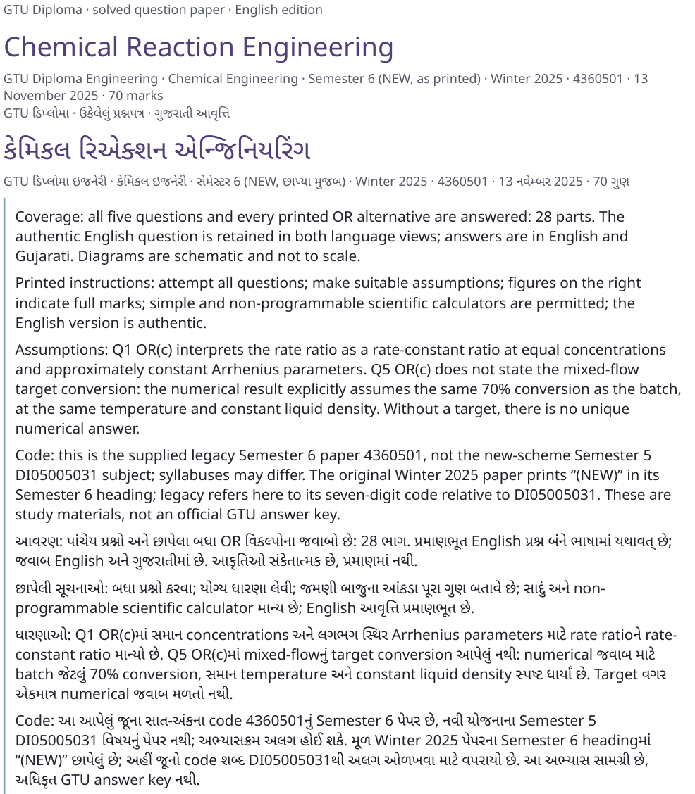
Question 1
Q1 · Reaction factors, classification and activation energy
Q.1 (a) · List factors affecting rate of reaction. · 3 marks
Reaction rate depends on the chemical state and conditions of the system.
• Reactant concentrations, or partial pressures for gases.
• Temperature and the presence or activity of a catalyst.
• For heterogeneous systems, contact area and mass transfer; light can matter for photochemical reactions.
Example: increasing temperature often speeds an ordinary reaction at the same concentrations.
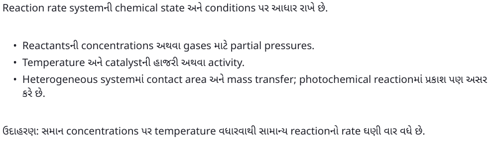
Q.1 (b) · Show the scope and importance of chemical reaction engineering. · 4 marks
Chemical reaction engineering combines reaction kinetics with reactor design and operation.
• Measure or model reaction rates and choose a suitable reactor.
• Use material and energy balances to estimate reactor size, conversion and temperature control.
• Improve yield and selectivity while accounting for mixing and transport.
• Consider safety, catalyst performance and cost when scaling up.
Example: laboratory kinetic data help size a continuous reactor for a required product output.
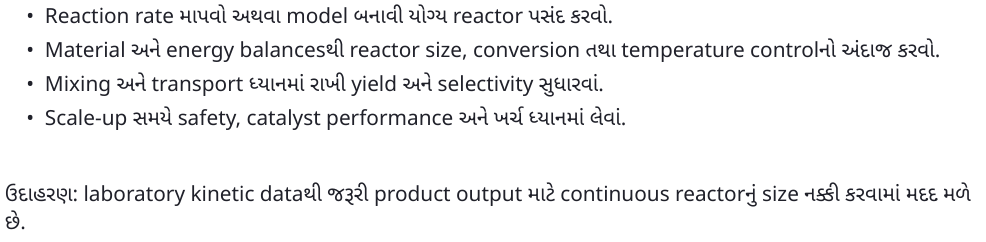
Q.1 (c) · Classify Chemical Reactions. · 7 marks
Reaction classification organizes reactions on independent bases; a reaction can belong to one type in each classification.

The pairs are different classification bases, not mutually exclusive labels across rows.
![Q.1 (c): preserved source formula, table or diagram, page 4. Extracted text context (formula notation may be incomplete): Basis Types and examples Phase Homogeneous: aqueous acid–base neutralization; heterogeneous: carbon solid reacting with oxygen gas. Direction Reversible: N₂O₄ ⇌ 2 NO₂; effectively irreversible: methane combustion under ordinary operating conditions. Heat effect Exothermic: methane combustion; endothermic: thermal decomposition of CaCO₃. Catalyst Catalytic: H₂O₂ decomposition with MnO₂; non-catalytic: aqueous HCl–NaOH neutralization without a catalyst. Mechanism Elementary: one elementary event; non-elementary: multiple steps with possible intermediates. Kinetics Zero, first, second or other order according to the experimentally established rate law; molecularity applies to an elementary step.](winter-2025.assets/0005.webp)
Example: the same combustion can be heterogeneous and exothermic. Classification is not enough to determine the rate law or reactor size; conditions and data matter.
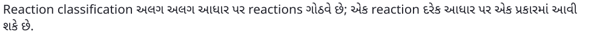
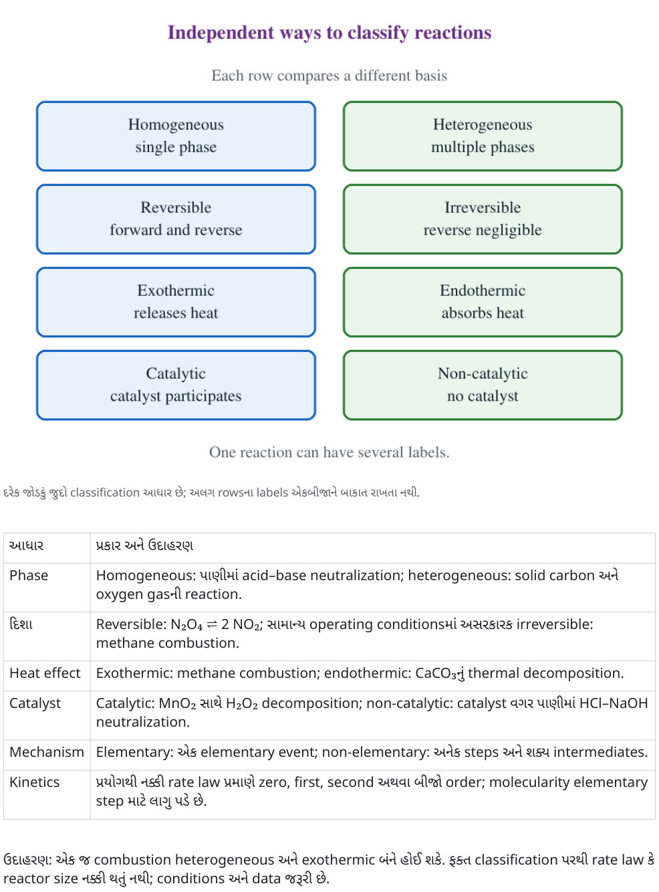
Q.1 (c) · At 500 K, the rate of a bimolecular reaction is ten times the rate at 400 K. Solve to get the activation energy of this reaction from Arrhenius law. (R=1.987cal/mol.k) · OR · 7 marks
Use the two-temperature Arrhenius equation to estimate activation energy.
Given and assumption
T₁ = 400 K; T₂ = 500 K.
Reported rate at 500 K is 10 times that at 400 K.
R = 1.987 cal mol⁻¹ K⁻¹.
Assume identical reactant concentrations and the same rate law, with A and Ea approximately
Step-by-step solution
5. Calculate — Ea ≈ 9,150 cal mol⁻¹ = 9.15 kcal mol⁻¹.
6. Convert energy — Ea ≈ 38.29 kJ mol⁻¹.
Ea ≈ 9.15 kcal mol⁻¹, conditional on equal concentrations and the stated Arrhenius assumptions.
Check: the higher temperature has the higher k, consistent with a positive Ea. Without the concentration assumption, a rate ratio alone need not equal the rate-constant ratio.
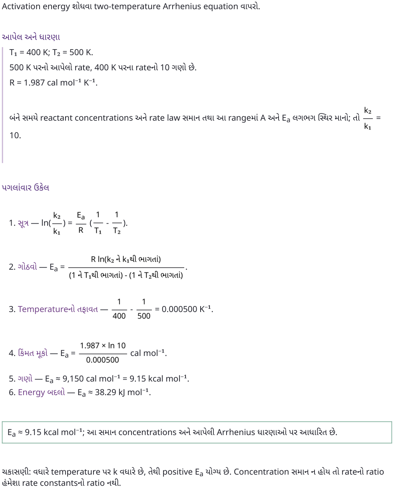
Question 2
Q2 · Rates, mechanisms and temperature
Q.2 (a) · Define rate of chemical reaction. · 3 marks
Rate of reaction is the change in amount of a species due to reaction per unit reaction volume and time; disappearance of reactant A is reported as a positive value.
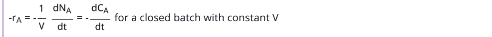
• A typical unit is mol L⁻¹ min⁻¹.
• In a closed constant-volume batch, a falling reactant concentration gives a positive disappearance rate; flowing systems also require inlet and outlet terms.
Example: if CA falls at 0.2 mol L⁻¹ min⁻¹ in a constant-volume batch, −rA = 0.2 mol L⁻¹ min⁻¹.
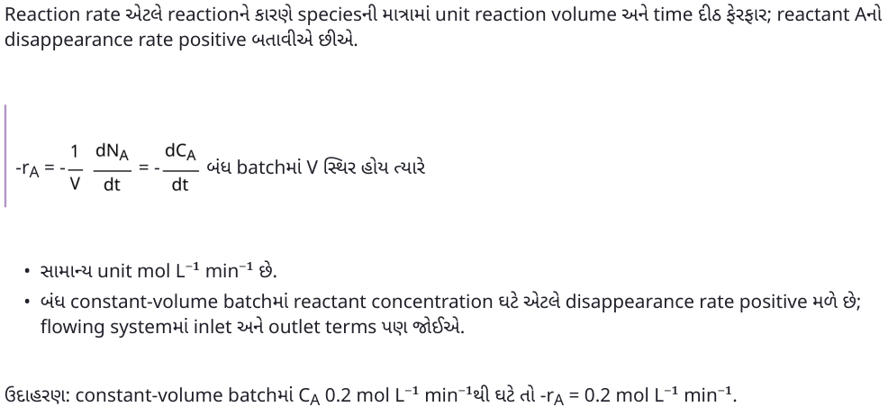
Q.2 (b) · Explain Biochemical Reactions. · 4 marks
Biochemical reactions are chemical transformations in biological systems, often accelerated by enzymes or microorganisms.
• An enzyme binds a substrate and promotes a specific reaction; the enzyme is not consumed stoichiometrically.
• Temperature, pH, substrate concentration and, where relevant, oxygen transfer affect the rate.
• Fermentation can convert glucose to ethanol and carbon dioxide using yeast.
C₆H₁₂O₆ → 2 C₂H₅OH + 2 CO₂
Example: a fermenter provides mixing and appropriate conditions for yeast. Biological growth and enzyme deactivation mean a simple rate law cannot be assumed without data.
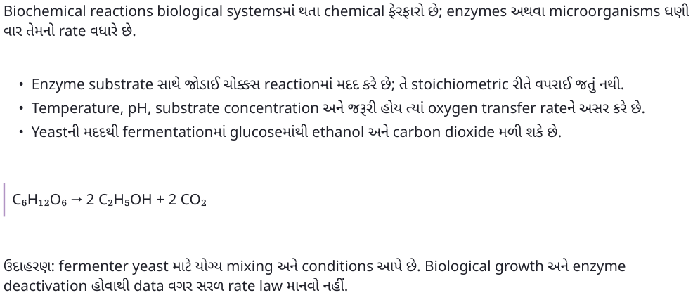
Q.2 (c) · Compare elementary and non-elementary reactions. · 7 marks
An elementary reaction is a single molecular step; a non-elementary overall reaction is described by two or more elementary steps.
![Q.2 (c): preserved source formula, table or diagram, page 10. Extracted text context (formula notation may be incomplete): Point Elementary Non-elementary overall Mechanism One elementary step. Multiple steps, possibly with intermediates. Rate law For a forward elementary step, each reactant power equals its molecular count in that step. Determine the overall rate law experimentally or from a validated mechanism. Order For the elementary step, order equals molecularity under the usual mass- action model. Overall order need not equal coefficients in the overall equation. Example Illustrative single step A + B → P: rate = k CACB. Catalytic decomposition of H₂O₂ proceeds through steps; its overall equation alone does not give its rate law.](winter-2025.assets/0017.webp)
How to use the distinction
1. Identify whether the given equation represents a verified single elementary event or only a net equation.
2. For a validated elementary step, use the molecular counts in that step as mass-action powers.
3. For a net reaction, measure initial rates or fit time-concentration data; do not equate stoichiometric coefficients to orders automatically.
A molecularity is assigned to an elementary step, not to an unverified overall mechanism. Even a convenient fitted overall rate law is valid only over its tested conditions.
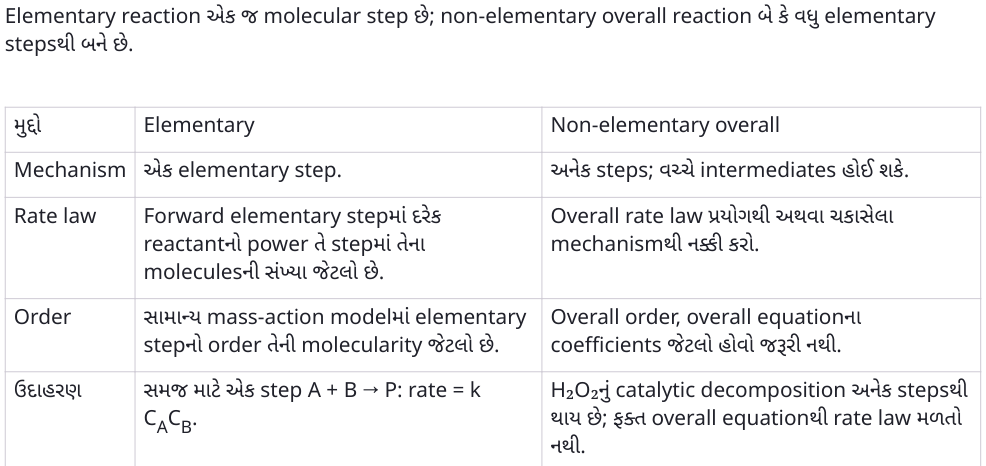
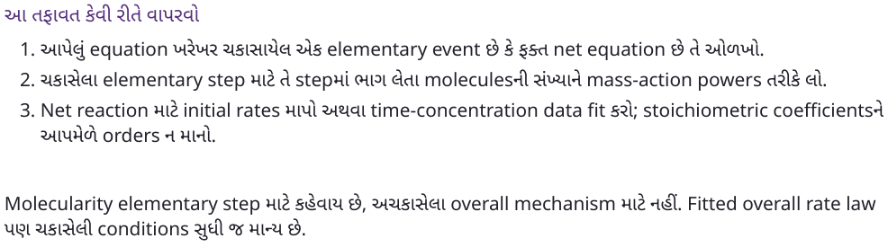
Q.2 (a) · Develop a relation of concentration and conversion of reactant for constant volume batch reacting system. · OR · 3 marks
Conversion XA is the fraction of initial reactant A that has reacted in a closed batch.
2. Rearrange — NA = NA0(1 − XA).
3. Constant volume — Divide both mole amounts by the same V: CA = CA0(1 − XA).
Example: at XA = 0.40 and CA0 = 2 mol L⁻¹, CA = 1.2 mol L⁻¹. A changing volume needs an additional volume ratio.
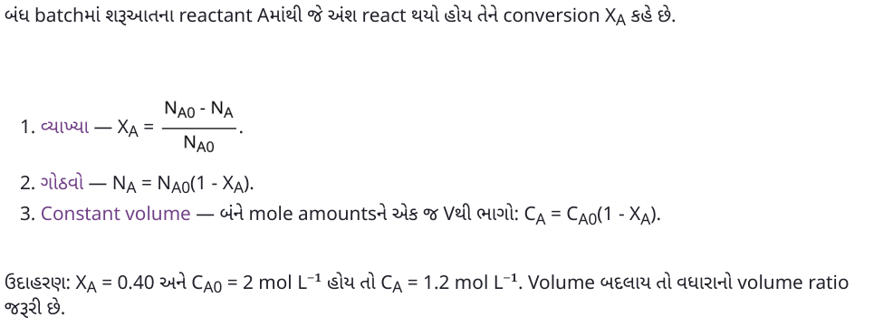
Q.2 (b) · Explain Molecularity and order of reaction. · OR · 4 marks
Molecularity is the number of reacting molecules or particles in one elementary event, counting repeated molecules separately; order is the sum of concentration exponents in a specified rate law.
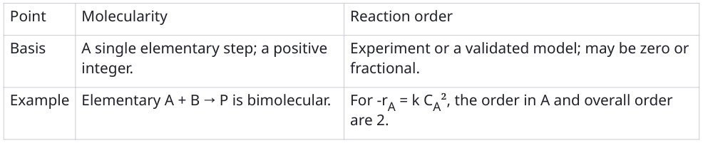
Do not assign molecularity to an unverified overall multi-step reaction; its order need not follow its stoichiometry.
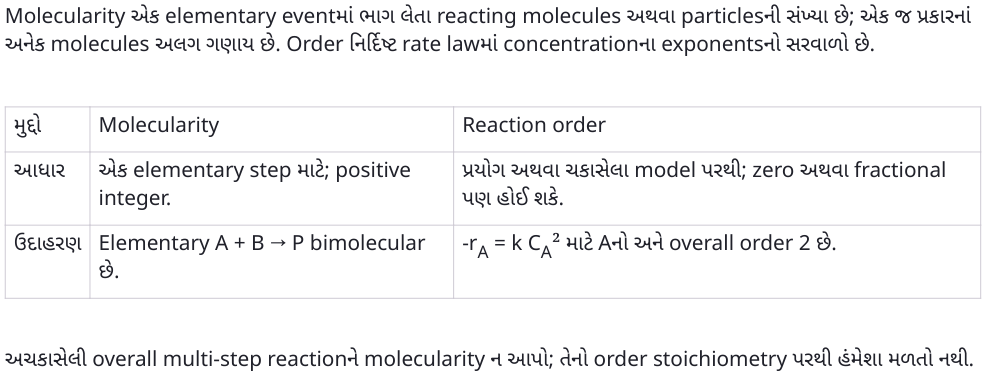
Q.2 (c) · Illustrate temperature dependency of rate using Arrhenius law. · OR · 7 marks
A rate constant k is the proportionality factor in a specified rate law at fixed conditions. The Arrhenius law relates k to absolute temperature and helps estimate temperature sensitivity for reactor design.
Equation and meaning
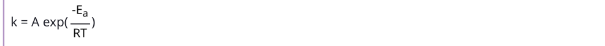
k = rate constant on the stated concentration and time basis.
A = pre-exponential factor; Ea = activation energy.
R = gas constant; T = absolute temperature in K.
Two-temperature relationship

2. At two temperatures — Subtract the expressions for T₁ and T₂, assuming the same A and Ea over the range.

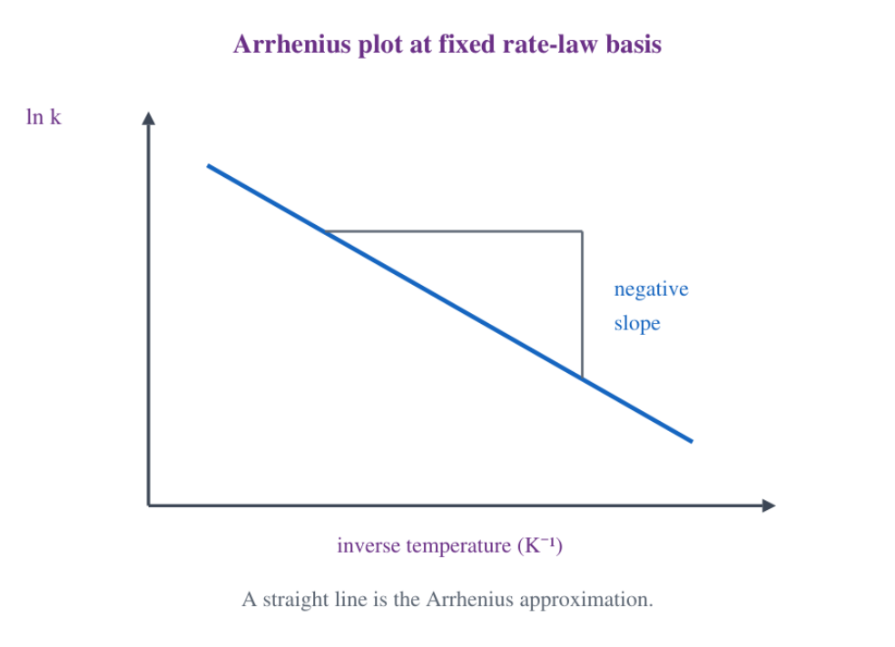
A straight ln k versus inverse-temperature plot has slope −Eₐ divided by R.
Illustrative calculation
Ea = 50,000 J mol⁻¹; R = 8.314 J mol⁻¹ K⁻¹.
T₁ = 300 K; T₂ = 310 K; assume constant A and Ea.


For this example, k₂ is about 1.91 times k₁.
With positive Ea, k increases as T rises. A and Ea may vary over a broad temperature range, and changing concentrations can change the measured reaction rate independently of k.
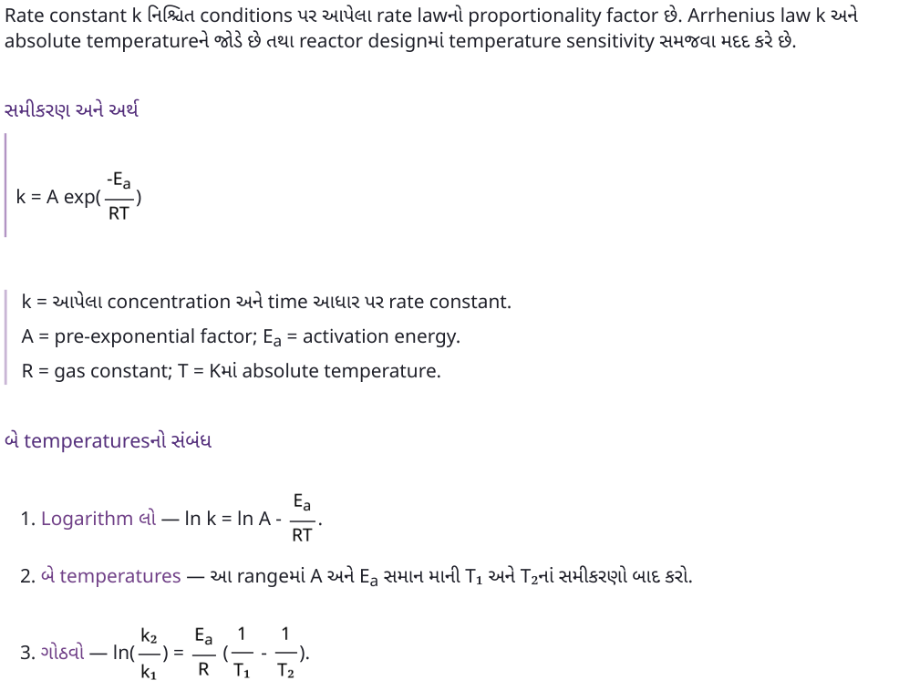


Question 3
Q3 · Activation, half-life and reactors
Q.3 (a) · Interpret the significance of activation energy. · 3 marks
Activation energy Ea is the parameter describing the sensitivity of a rate constant to temperature in the Arrhenius model.
• A higher positive Ea gives stronger temperature sensitivity over the same range.
• It is commonly associated with an energy barrier along a reaction pathway.
• A catalyst can provide a different pathway with a lower activation barrier; it does not change the equilibrium constant at a fixed temperature.
Example: two Arrhenius reactions with different Ea values can respond differently to the same temperature rise.
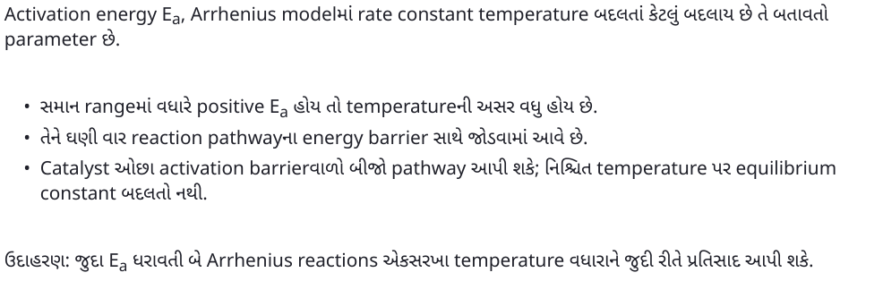
Q.3 (b) · Define Half life of reaction. How it depends on concentration? · 4 marks
Half-life t½ is the time for reactant concentration to fall from CA0 to half of CA0 in a constant-volume batch.
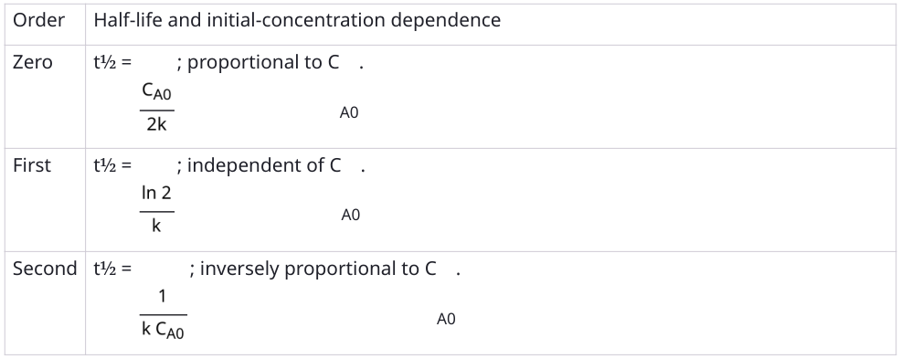
Example: for first order with k = 0.10 min⁻¹, t½ = 6.93 min at either initial concentration. These forms assume the stated single-reaction power law.
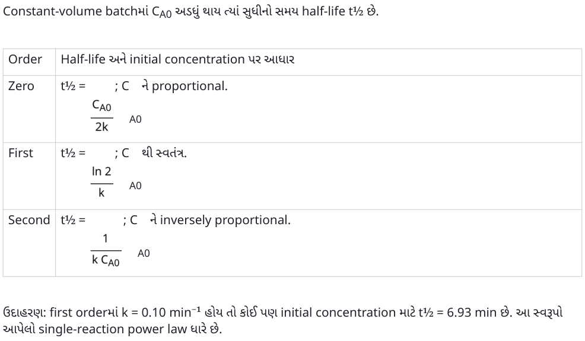
Q.3 (c) · Make use of characteristics of ideal reactors to classify ideal reactors. · 7 marks
Ideal reactor models classify reactors by flow pattern and mixing assumptions. They provide limiting designs to compare with real equipment.
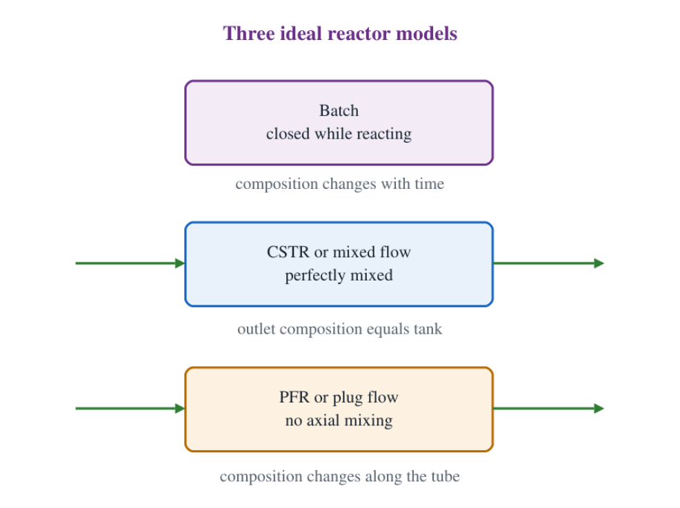
Ideal batch, mixed-flow and plug-flow models; arrows indicate continuous flow.
Classification and characteristics
![Q.3 (c): preserved source formula, table or diagram, page 18. Extracted text context (formula notation may be incomplete): Model Flow and mixing Concentration behaviour Batch Charge, close, react and discharge; ideally perfectly mixed. Uniform throughout the vessel, but changes with time. CSTR (mixed flow) Continuous feed and outlet; ideally perfect mixing. At steady state, uniform tank and outlet compositions are equal. PFR (plug flow) Continuous flow; no axial mixing in the ideal model. Uniform across each cross-section and generally changes along the length.](winter-2025.assets/0038.webp)
Performance basis
• Batch: accumulation equals reaction generation; there is no flow while reacting.
• CSTR: at steady state, inlet − outlet + generation = 0, using the outlet rate.
• PFR: a differential steady-state balance uses the local rate as composition changes.
Example and selection
For a first-order liquid reaction with constant density, k = 0.10 min⁻¹ and target X = 0.50.
This comparison is conditional on the stated kinetics and equal inlet conditions, not a universal ranking. Batch suits flexible production; CSTR suits continuous mixing; PFR suits continuous tubular operation. Real reactors can deviate because of non-ideal mixing or temperature gradients.
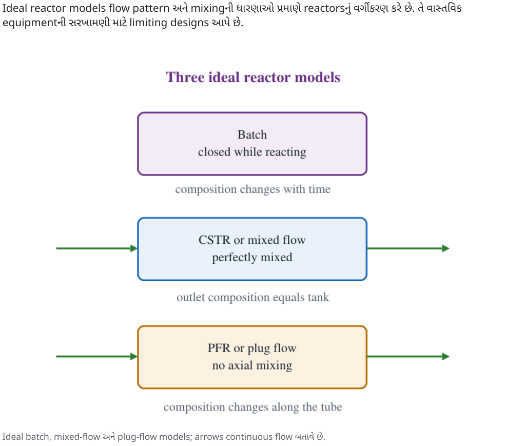
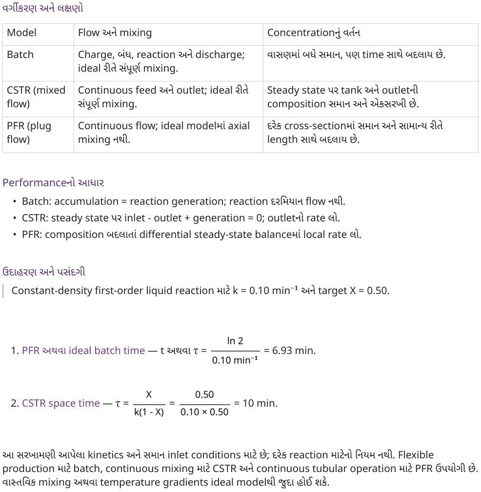
Q.3 (a) · Outline a plot of of rate vs time for zero order and first order reaction. · OR · 3 marks
In a constant-volume batch, the positive disappearance rate behaves differently for zero and first order.
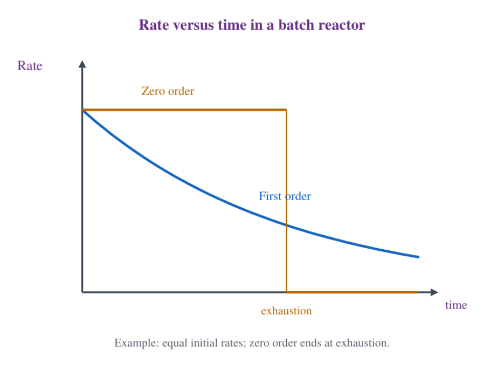
Illustrative curves begin at equal rates; zero order is valid only until reactant exhaustion.
• Zero order: −rA = k₀, constant while the model holds and reactant remains.
• First order: CA = CA0 exp(−k₁t), so −rA = k₁CA0 exp(−k₁t).
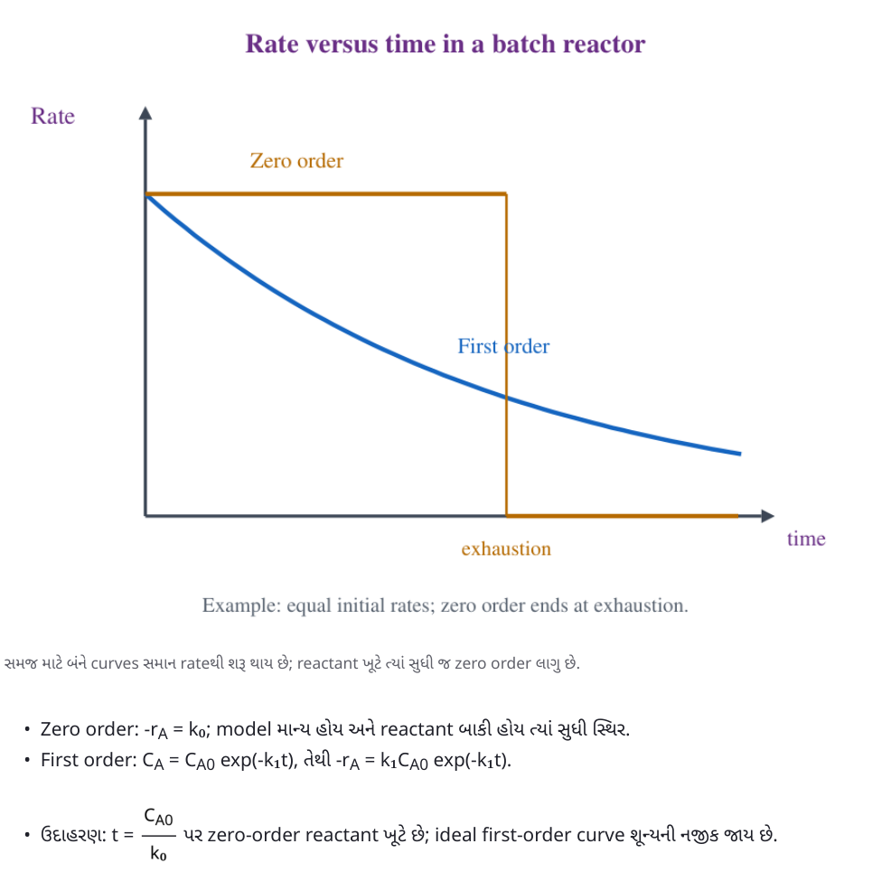
Q.3 (b) · List general stepwise procedure for Differential method of analysis. · OR · 4 marks
Differential analysis estimates the instantaneous reaction rate from concentration–time data, then tests a rate law.
1. Collect CA versus t in a well-mixed, constant-volume batch at fixed temperature.
3. For an assumed power law, plot ln(−rA) versus ln CA; slope gives n and intercept gives ln k.
4. Check the fitted law against independent measurements and its stated conditions.
Example: slope near 1 is consistent with first order. Differentiation amplifies measurement noise, so report smoothing and uncertainty.
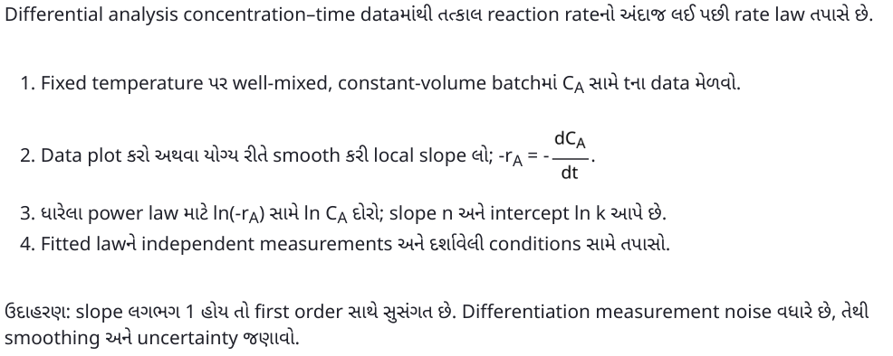
Q.3 (c) · Explain construction and working of Bubble column reactor. · OR · 7 marks
A bubble-column reactor provides gas–liquid contact in a vertical vessel without requiring a mechanical impeller.

Schematic continuous-liquid arrangement; some bubble columns operate with batch liquid.
Construction — part and purpose
1. A tall vertical vessel holds the liquid and provides height for bubble contact.
2. A bottom gas distributor or perforated sparger splits the incoming gas into bubbles.
3. A gas feed supplies the sparger and a top gas outlet releases unreacted gas.
4. Liquid may be held as a batch or supplied and withdrawn continuously; ports and temperature controls support operation.
Working — step and reason
1. Gas enters the sparger and forms bubbles, creating gas–liquid interface.
2. Bubbles rise and circulate the liquid; a gas reactant can transfer across the interface and react in the liquid.
3. Unreacted gas leaves through the top; in continuous operation liquid product is withdrawn and feed is replenished.
Illustrative application and limitations
• For aeration, sparged air creates bubbles and oxygen dissolves into the liquid; the remaining gas leaves overhead.
• The simple vessel has few moving parts, but gas–liquid mass transfer, foaming and heat removal can limit performance.
Actual flow pattern, bubble size and conversion depend on operating conditions; the figure is not a scale design.
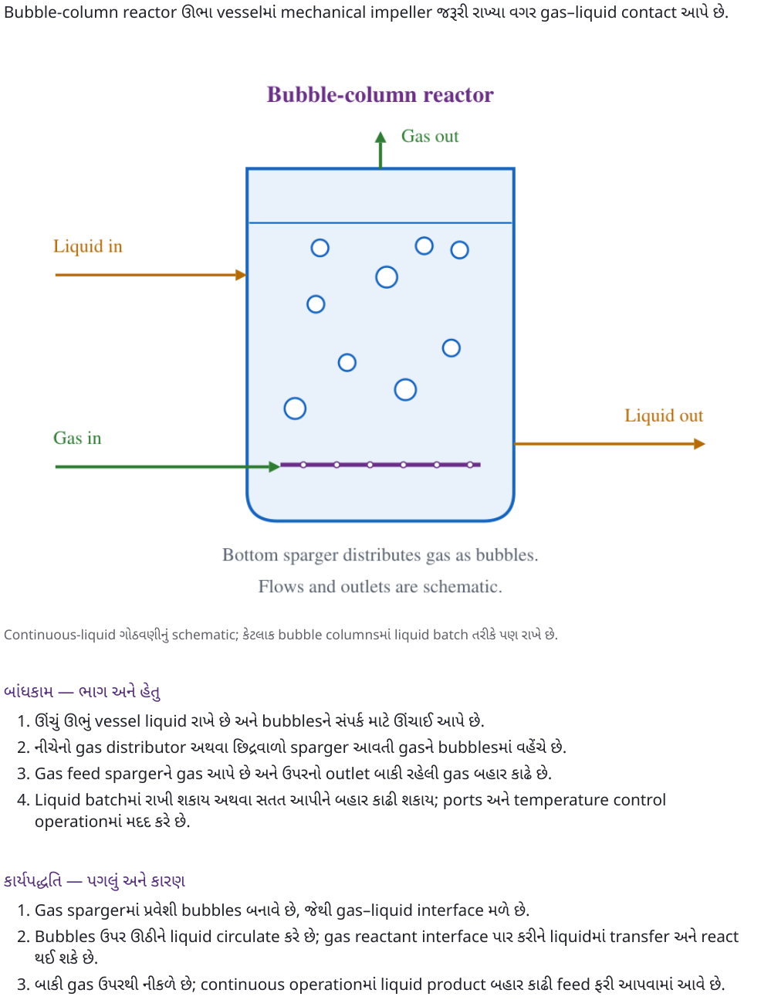
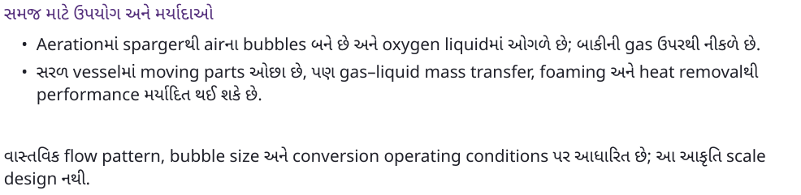
Question 4
Q4 · Kinetic analysis and fluidized beds
Q.4 (a) · List applications of CSTR. · 3 marks
A CSTR continuously feeds and withdraws material from a well-mixed vessel.
• Continuous neutralization of an aqueous stream.
• Continuous fermentation or biochemical processing where suitable.
• Continuous polymerization and other liquid-phase chemical production.
Example: a stirred neutralization tank mixes incoming acid and base; feed rates and pH must be controlled.
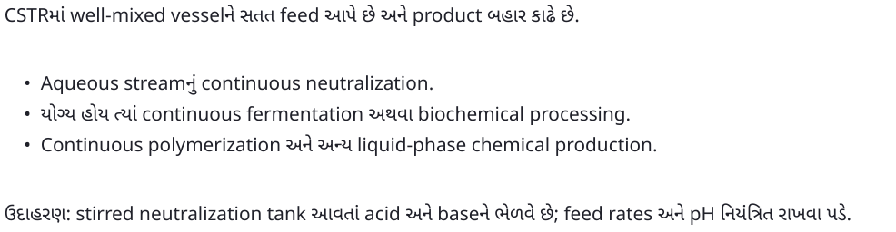
Q.4 (b) · Construct integrated rate equation for unimolecular first order reaction in terms of conversion. · 4 marks
For an irreversible first-order reaction in a closed, constant-volume batch, write the integrated law in conversion.
−dCA per dt = k CA; CA = CA0(1 − XA).
Initial conversion XA = 0 at t = 0; k is constant at fixed temperature.
3. Substitute conversion — ln(1 − XA) = −kt.
XA = 1 − exp(−kt).
Example: k = 0.10 min⁻¹ and t = 10 min give XA = 1 − exp(−1) ≈ 0.632. The relation assumes a single first-order law and constant volume.
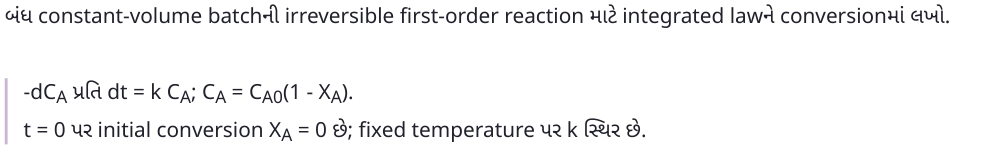
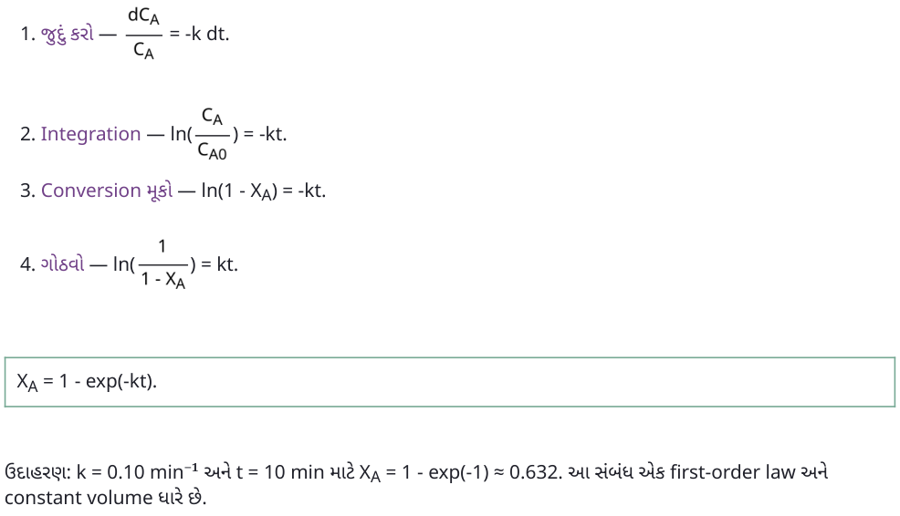
Q.4 (c) · Contrast Integral method and differential method of kinetic data analysis. · 7 marks
Integral and differential methods analyze batch kinetic data in different ways to identify a rate law.
![Q.4 (c): preserved source formula, table or diagram, page 28. Extracted text context (formula notation may be incomplete): Point Integral method Differential method Use of data Test concentration–time data against integrated candidate equations. Estimate instantaneous slopes and relate rate to concentration. Order Choose a candidate order and check its linearized plot or fit. For a power law, slope of ln rate against ln concentration estimates order. Noise Avoids numerical differentiation and is usually less sensitive to noise. Differentiation amplifies noise; smoothing and uncertainty matter. Limitation Requires a suitable proposed integrated model. Reliable local slopes need enough accurate data.](winter-2025.assets/0058.webp)
Stepwise comparison on the same batch
Assume a single irreversible reaction, constant volume and fixed temperature.
Candidate power law: −rA = k CAn.
1. Integral test — For first order, plot ln CA against t; a straight line with slope −k supports the model.
3. Order from slope — Plot ln(−rA) against ln CA; slope = n and intercept = ln k for this power law.
4. Validate — Check residuals, units, repeat experiments and the range of validity.
Illustrative example: a straight ln CA versus time plot and a differential slope near 1 both support first-order behaviour, but do not alone prove the mechanism.
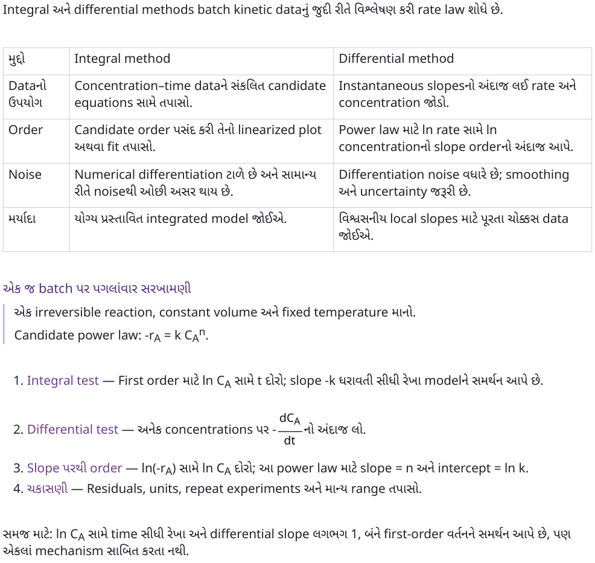
Q.4 (a) · Explain Half life method for kinetic data analysis. · OR · 3 marks
Half-life method finds a rate-law order by measuring the time to reach half the initial reactant concentration for several initial concentrations.
• Use the same temperature and a constant-volume batch for each run.
• Zero order: t½ is proportional to CA0; first order: t½ is constant; second order: t½ is inversely proportional to CA0.
• Compare the observed trend with these predictions and verify the fitted law.
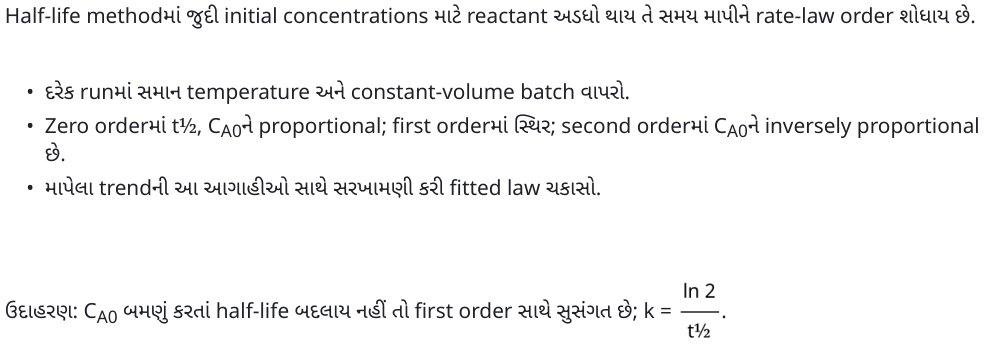
Q.4 (b) · Compare space time and holding time. · OR · 4 marks
Space time uses the inlet reference flow; holding time describes actual time spent by fluid in the vessel under the stated flow model.
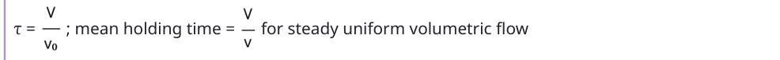
![Q.4 (b) OR: preserved source formula, table or diagram, page 31. Extracted text context (formula notation may be incomplete): Point Space time Holding time Definition Reactor volume V divided by inlet volumetric flow v₀ at specified inlet conditions. For a steady, uniform-flow vessel the mean holding time is V divided by its actual volumetric flow v. Still defined using inlet v₀. For ideal plug flow with spatially varying v, time is the integral of dV divided by local v. Changing flow v₀ = v throughout, so τ = V divided by v. Under those assumptions it equals τ; a CSTR has a distribution of individual residence times even though its mean is V divided by v. Constant density](winter-2025.assets/0064.webp)
Example: V = 100 L and constant v = v₀ = 10 L min⁻¹ give both values as 10 min. With gas expansion the values can differ; always specify the flow conditions.
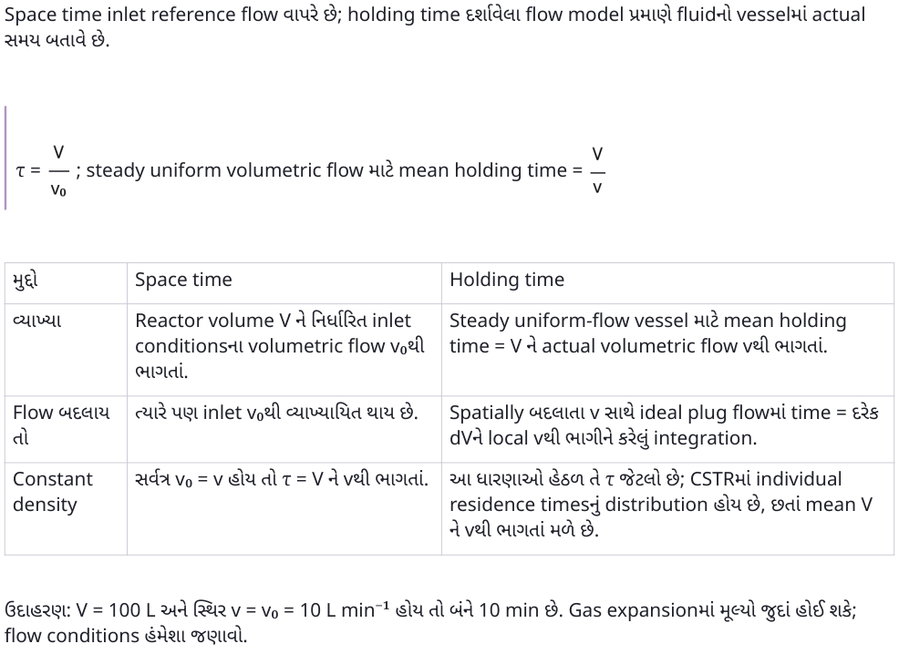
Q.4 (c) · Illustrate construction and working fluidized bed reactor in detail. · OR · 7 marks
A fluidized-bed reactor uses upward fluid to suspend solid particles and obtain good contact between fluid and solids.
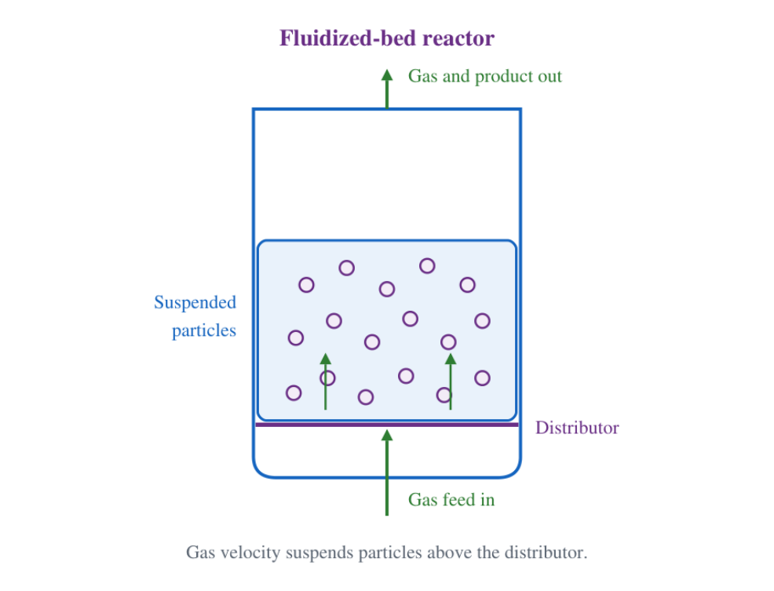
Schematic gas–solid fluidized bed; a cyclone may be added downstream to recover entrained solids.
Construction — part and purpose
1. A vertical vessel holds solid catalyst or reacting particles above a porous plate.
2. The bottom distributor admits fluid and spreads it across the bed.
3. An upper freeboard and outlet allow fluid and products to leave.
4. Temperature controls manage heat; a cyclone or other separator can recover carried-over solids.
Working — step and reason
1. Introduce gas through the distributor and increase its superficial velocity to lift the particles.
2. Above the minimum fluidization velocity the pressure force supports the particles and the bed expands.
3. Gas contacts moving particles, reaction takes place and products leave; entrained particles are separated or recycled where required.
Illustrative check, advantages and limitations
• If the assumed minimum fluidization velocity is 0.05 m s⁻¹, an operating velocity of 0.12 m s⁻¹ is above that threshold; gas distribution and entrainment still need checking.
• Mixing of solids can improve heat transfer and make bed temperature more uniform.
• Particle attrition, entrainment, gas bypass and separation add operating challenges.
• Catalytic cracking uses fluidized catalyst particles; real industrial arrangements can include regeneration and cyclones.
Fluidization and performance depend on particle properties and gas velocity; do not treat the schematic as a detailed plant design.
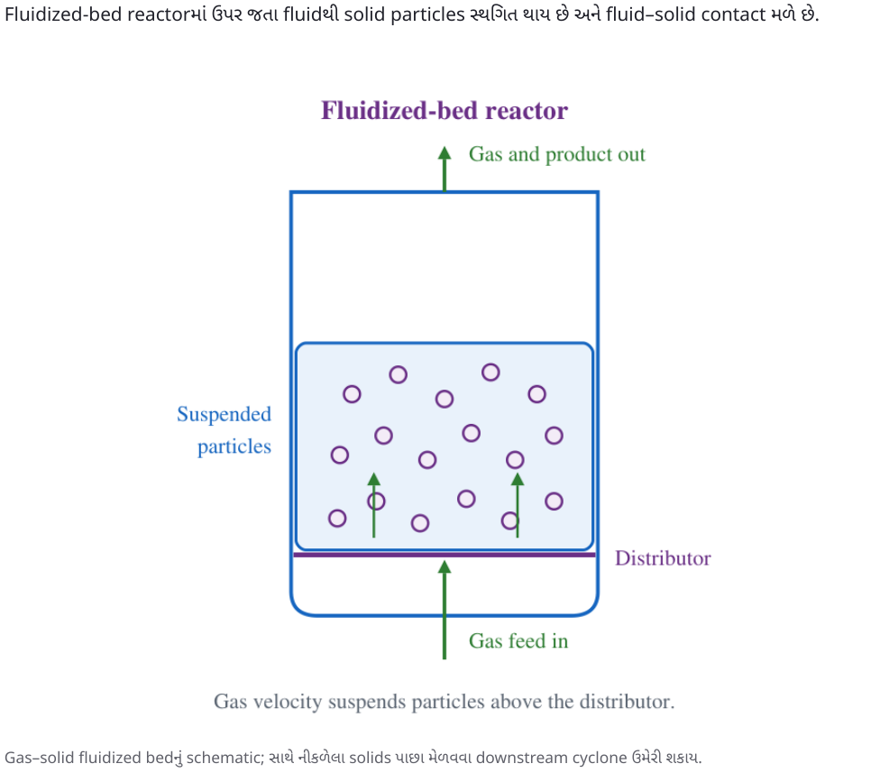
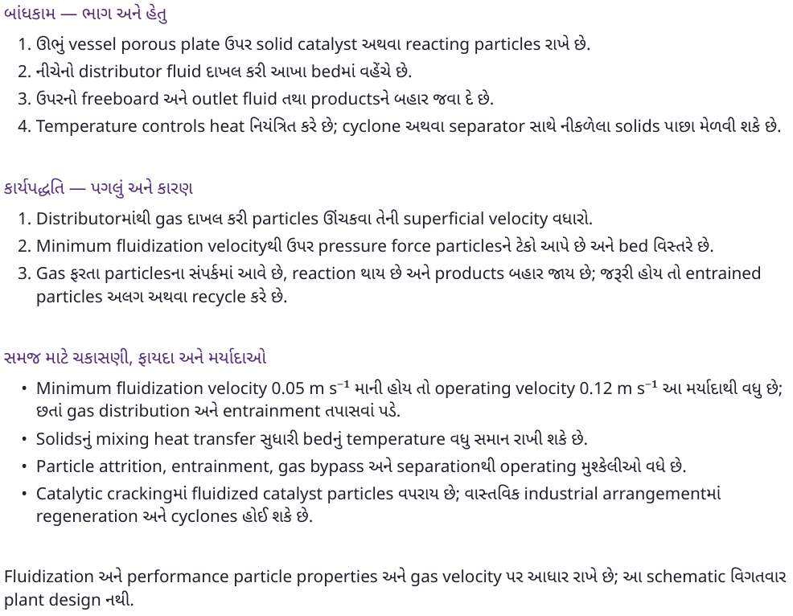
Question 5
Q5 · Reactor balances and design
Q.5 (a) · What is space time and space velocity? · 3 marks
Space time τ is reactor volume divided by inlet volumetric flow rate at specified inlet conditions. Space velocity is its reciprocal on that same basis.
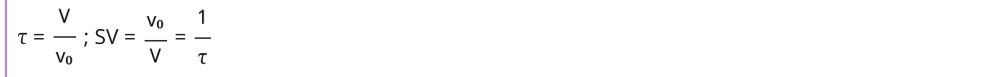
• V is reactor volume and v₀ is feed volume per unit time at the stated temperature and pressure.
• τ has units of time; SV has reciprocal-time units.
• For constant-density flow, τ equals V divided by the volumetric flow rate throughout the reactor.
Example: V = 100 L and v₀ = 10 L min⁻¹ give τ = 10 min and SV = 0.10 min⁻¹. For variable-density flow, space time is a reference quantity and need not equal actual holding time.
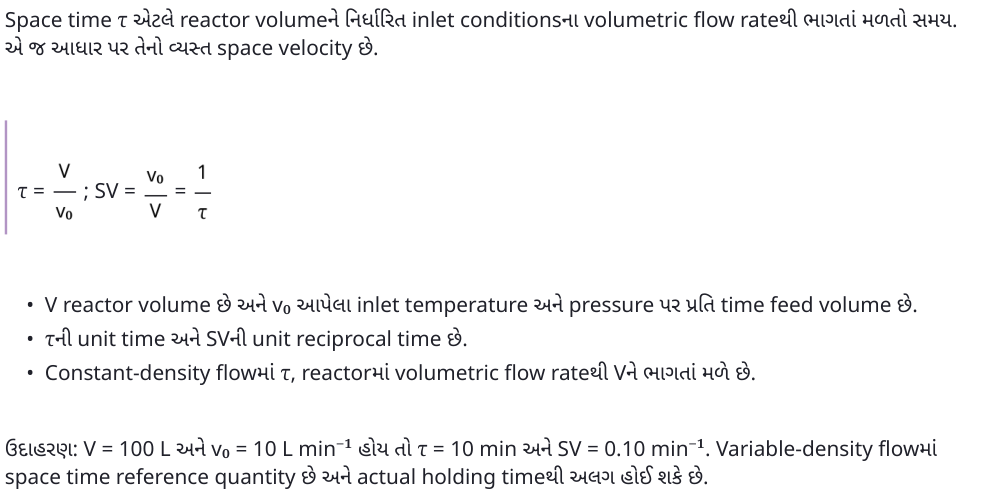
Q.5 (b) · List advantages and disadvantages of fixed bed reactor. · 4 marks
In a fixed-bed reactor, fluid flows through a stationary bed of solid catalyst or reactant.
![Q.5 (b): preserved source formula, table or diagram, page 35. Extracted text context (formula notation may be incomplete): Advantages Disadvantages Simple reactor arrangement; catalyst generally retained in the vessel. Pressure drop increases with bed resistance or fouling. Continuous operation and good contact with a packed catalyst. Heat removal and hot-spot control may be difficult for strongly exothermic reactions. No continuous solid circulation is required in the basic arrangement. Catalyst regeneration or replacement may require downtime; channeling can reduce contact.](winter-2025.assets/0071.webp)
Example: a packed catalytic bed treats a continuously flowing gas; actual performance depends on particle size, heat transfer and pressure drop.
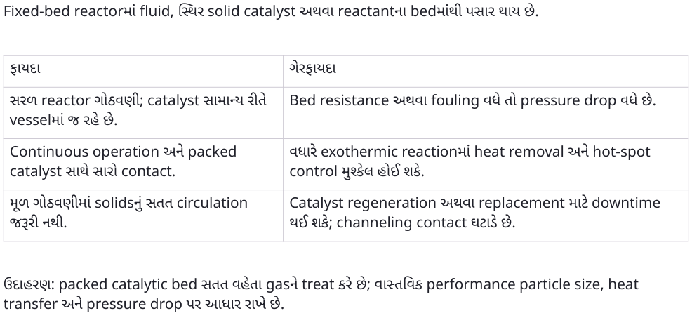
Q.5 (c) · Utilize material balance to get steady state performance equation for Plug Flow Reactor. · 7 marks
Derive the steady-state plug-flow reactor performance equation from a differential material balance.

Choose the indicated differential reactor volume dV; the rate is evaluated locally.
Assumptions and notation
Steady state, no axial mixing, and uniform composition over each cross-section.
FA0 is inlet molar flow; FA and rA are local values.
X = (FA0 − FA) divided by FA0, with X = 0 at the inlet.
Step-by-step derivation
1. Balance on dV — 0 = FA − (FA + dFA) + rA dV.
3. Conversion — FA = FA0(1 − X); dFA = −FA0 dX.
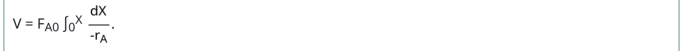
Constant-density first-order example
τ = V divided by inlet volumetric flow v₀; FA0 = v₀CA0.
−rA = k CA0(1 − X), k = 0.10 min⁻¹; target X = 0.50.
The general molar-flow form also applies to variable-density systems if the correct local concentrations, temperature and rate are used. Real axial dispersion or radial gradients can invalidate the ideal model.
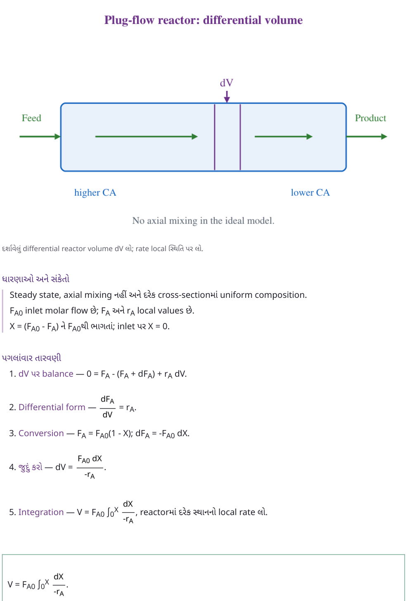
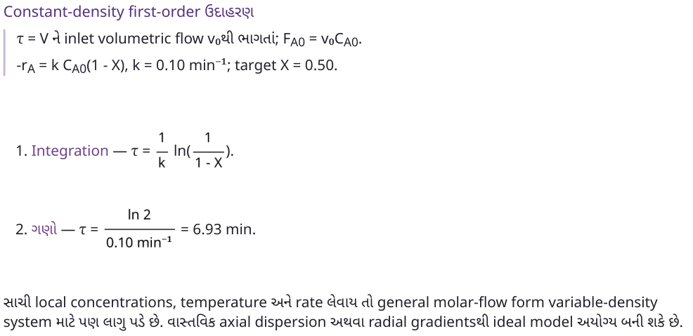
Q.5 (a) · Develop general equation for performance for ideal batch reactor. · OR · 3 marks
For an ideal batch reactor, no material enters or leaves while the reaction proceeds.
2. Conversion — NA = NA0(1 − X); hence NA0 dX = (−rA)V dt.
Example: use −rA = k CA0(1 − X) for a constant-volume first-order reaction. The rate and volume must be known along the reaction path.
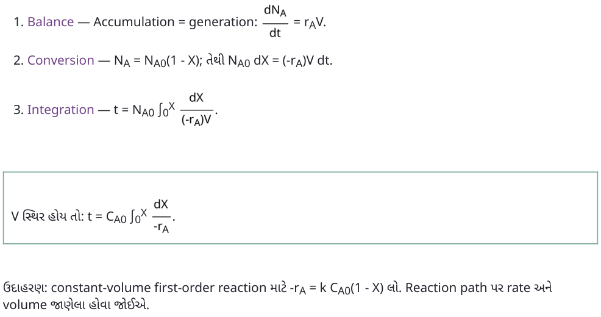
Q.5 (b) · Relate total pressure of system and partial pressure of component for constant volume reactor. · OR · 4 marks
For an ideal-gas mixture, partial pressure Pi is related to total pressure PT by the mole fraction.
General relation
For a closed, fixed-volume gas batch, assume ideal gases and uniform temperature T.
Ni and NT are component and total gas moles.
1. Ideal gas — PiV = NiRT and PTV = NTRT.
3. Therefore — Pi = yiPT.
Conversion example at constant temperature
Take a closed batch, pure A initially at PA0 = 2.0 bar; 2 A → B, no initial B.
At X = 0.40, one mole B forms per two moles A consumed.
1. A partial pressure — PA = PA0(1 − X) = 2.0 × 0.60 = 1.2 bar.
3. Total and fraction — PT = PA + PB = 1.6 bar; yA = 1.2 divided by 1.6 = 0.75.
PA = yAPT = 0.75 × 1.6 = 1.2 bar in this example.
The mole-fraction relation holds for ideal mixtures at a common T and V. The conversion-specific pressure expressions above additionally assume a closed, isothermal batch and the stated gas stoichiometry; changing temperature or adding inert gas changes the total-pressure calculation.
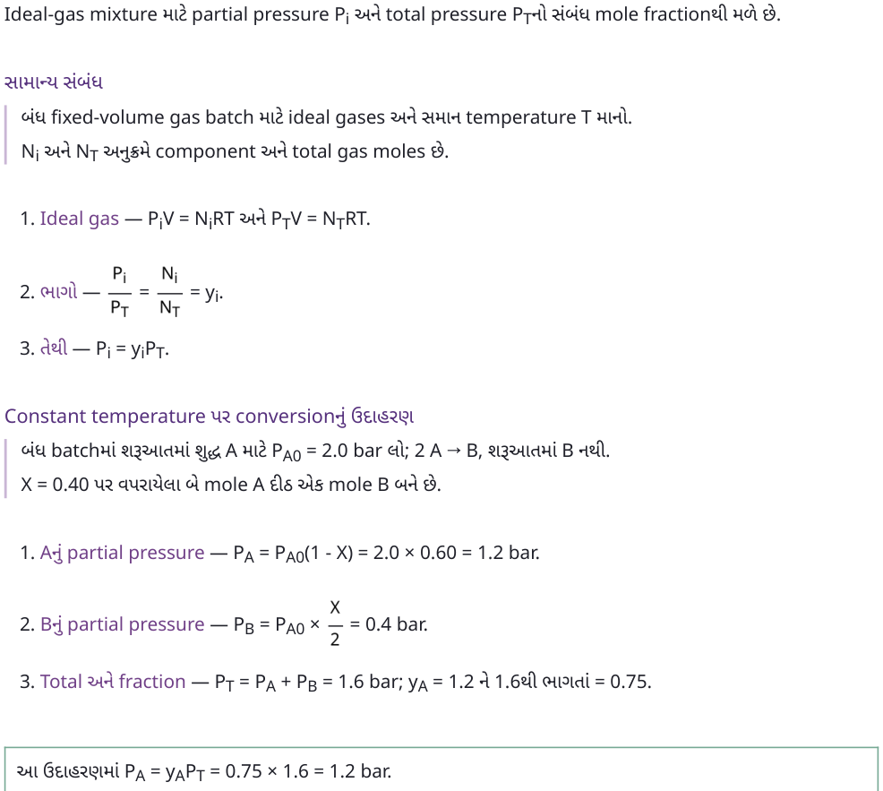
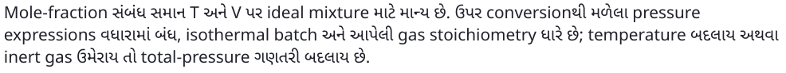
Q.5 (c) · An isothermal batch reactor the conversion of a liquid reactor A is 70% in 13 min. Solve to get space time and space velocity in a mixed flow reactor. Consider first order kinetics. · OR · 7 marks
First use the batch result to find k, then apply the steady-state mixed-flow design equation.
Given and necessary assumption
Batch conversion Xbatch = 0.70 in t = 13 min; first-order liquid reaction.
The printed question does not state the mixed-flow reactor target conversion.
For a numerical answer, assume XCSTR = 0.70, the same temperature and k, constant liquid density, and ideal steady mixing.
Step 1: determine k from the batch
Step 2: mixed-flow space time
4. Calculate — τ ≈ 25.19 min.
Step 3: space velocity and check
2. Convert — SV ≈ 0.03969 × 60 = 2.381 h⁻¹.
3. Check — At X = 0.70, kτ = 0.70 divided by 0.30 ≈ 2.333, matching the CSTR first-order balance.
If the CSTR target is also 70%: τ ≈ 25.19 min and SV ≈ 0.03969 min⁻¹ (2.381 h⁻¹).
Without a specified CSTR conversion there is no unique numerical τ or SV. For a different target X, use τ = X divided by [0.092613(1 − X)] min and SV = 0.092613(1 − X) divided by X min⁻¹, under the same assumptions.
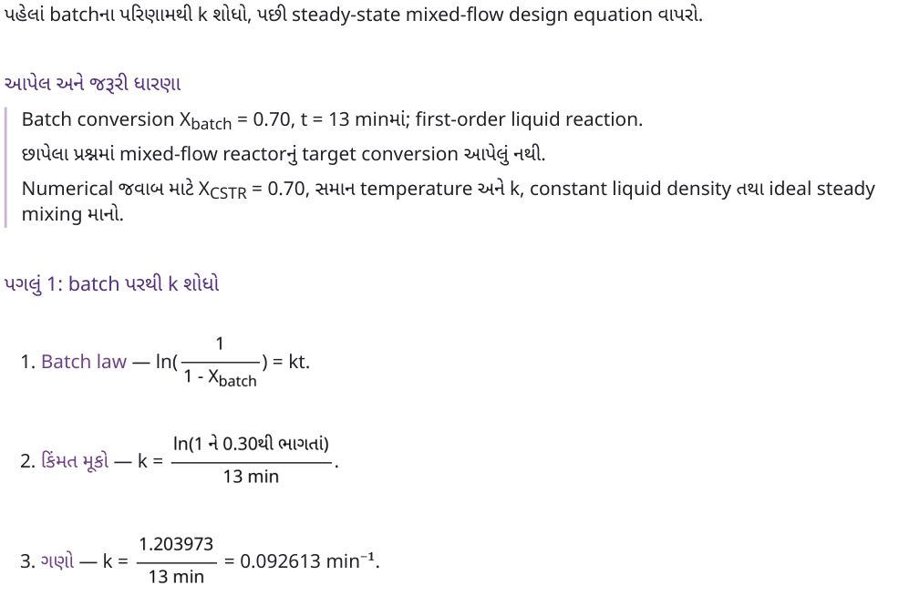
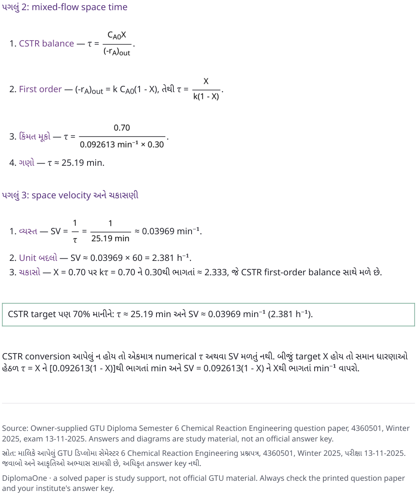